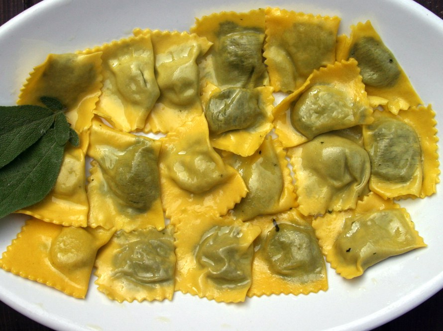

I TORTELLI VERDI
PRIMI PIATTI

- Descrizione
- I tortelli verdi o tortelli d'erbetta sono un piatto italiano tipico dell'Emilia, in particolare dell'area Parmense e Reggiana.
Si tratta di una minestra asciutta di involtini di sfoglia all'uovo ripieni di un impasto composto da spinaci o bietole verdi anche in abbinamento con aromi, condimento, formaggio e ricotta.
Gli ingredienti di base del ripieno possono variare nella proporzione della composizione secondo le tradizioni locali e familiari.
- Nelle famiglie reggiane è tradizione preparare i tortelli come primo piatto della cena della Vigilia di Natale, eventualmente tortelli verdi e tortelli di zucca abbinati. Si vuole così proporre un piatto ricco e gustoso rispettando il precetto di magro della Vigilia.
- Preparazione
- La caratteristica più saliente di questo piatto è la presenza delle verdure nel ripieno che ne fanno un alimento abbastanza leggero e digeribile sebbene sia ricco di sapore e di gusto.
La presenza di tanta parte dei prodotti caseari quali: ricotta e formaggio (nel ripieno), burro e formaggio per il condimento finale, ne fanno un alimento tipico delle zone, qual è l'Emilia, dove questi alimenti sono prodotti tipici e di uso quotidiano.
Nel ripieno, in luogo degli spinaci e/o delle bietole, si possono utilizzare altre verdure o erbe: verza, catalogna, radicchio, borragine e, perfino, ortiche.
Nell'area parmigiana i tortelli sono riempiti con un impasto dove prevale la ricotta mentre la quantità delle erbette è molto ridotta.
Il ripieno viene avvolto in una sottile sfoglia di uova e farina formando dei piccoli rettangoli di dimensione massima come una carta di credito e minima come la sua metà.
- La classica preparazione reggiana "impone" che i tortelli siano conditi soffregando un pezzo di burro su ogni strato degli stessi cotti e posti nella zuppiera (o ne nel piatto se è una preparazione singola) cospargendo poi di formaggio Parmigiano-Reggiano stravecchio.
Volendo, si possono condire anche con burro fuso, tenendo presente che risulteranno meno delicati e si dovrà utilizzare una maggiore quantità di burro. Sempre il formaggio grattugiato, sopra.
Sconsigliabile l'utilizzo di burro nocciola. Ammissibile il burro aromatizzato con salvia.
Torna alla pagina iniziale
by Bartoli Matteo